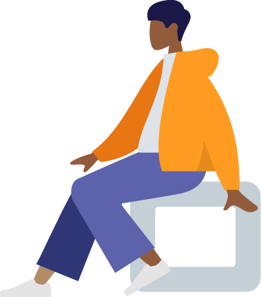

Start creating your own scalable vector graphics in less than a minute!
GET STARTED
GET SVG CODE
createyourhuman helps Developers and Designers who wants to input vector base illustrations to their websites as easy as 123. It allows you to edit your own vector character and copy it by simply clicking the button and insert it inside your html file. All Character Designs are from humaaans, check out their website as they have a lot of great vector graphic designs!
Your support is very much appreciated! Enjoy and share it with your friends now!